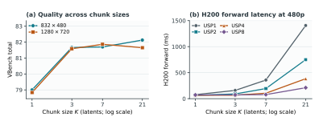

Commit–One
Decoupling Generation and Commitment for Interactive Video Generation
Interactive video generation requires newly arriving conditions to affect an ongoing stream promptly. A natural approach is to generate video autoregressively in small temporal chunks, creating frequent opportunities to incorporate a new condition.
Smaller chunks, however, also reduce the amount of video modeled jointly and may limit parallel efficiency. Commit-One asks whether fine-grained interaction must require fine-grained generation.
TL;DR. Commit-One turns bidirectional MiniMax H3, which jointly samples five seconds of video at a time, into a low-latency interactive system with approximately 1.4 seconds of end-to-end response latency—from a new user input to the first displayed video frame that responds to it.
1. Where the chunk-size constraint comes from
An interactive system generates video into a buffer while a player consumes previously generated output. Let K denote the number of temporal latents generated together. If each latent represents δ seconds of video, one generation chunk covers
Generation throughput alone does not determine how quickly the stream responds. A condition may first wait for generation to begin, then wait for the first affected output to become ready, and finally wait for that output to reach playback. We write these components as
In a conventional system, each generation call appends the entire generated chunk to the playback queue: generate K latents, commit K latents. For an isolated condition arriving uniformly within this chunk period, and with generation time held fixed, the expected waiting before generation and playback satisfies
This bound is an expectation under the stated model rather than a statement about every request. Its role is to make the coupling explicit: even if generation itself is fast, the duration of a chunk still appears in the response-time floor.
Since T = Kr/f, the direct ways to reduce this term are to use fewer latents per chunk or to increase the temporal frame rate. Neither change is free. Smaller chunks reduce the range of joint temporal modeling and may offer less useful work for parallel execution. Increasing the frame rate solely to obtain finer interaction spends additional computation on frames that may not otherwise be needed. It also requires the data pipeline to reprocess and store videos at the new rate, since current video generation models generally assume a fixed training and generation frame rate rather than supporting variable frame rates directly.
We therefore ask whether the system can remove the chunk-period waiting constraint without requiring the model to generate smaller chunks.
2. Keep the future revocable
In a conventional system, one generation call produces K latents and commits the whole chunk to the playback queue. Once committed, none of those predictions can be changed.
Commit-One still generates K latents together, but it does not commit all of them at once. It commits only the part that must be fixed and keeps the remaining predictions in the cache.
When a new condition arrives, the committed prefix stays unchanged. The uncommitted future can be withdrawn and generated again under the new condition. The model can therefore generate a large chunk without fixing the entire predicted future.
3. Managing a revocable future
Keeping part of the predicted future uncommitted makes it revocable. The next question is when to reuse these predictions, when to replace them, and when to generate more.
Commit-One manages these decisions with a two-state controller. In Consume, the system reuses predictions from the cache and commits them gradually. In Produce, the model runs a generation job either to refill the cache or to replace an uncommitted suffix.
When a new condition arrives, playback continues from the committed prefix. The controller keeps the part that can no longer be changed and regenerates the remaining future from the earliest feasible point. If the condition does not change, it simply refills the cache before the available predictions run out.
Commit-One predicts ahead using the latest observed condition, assuming that it will remain unchanged. If the condition stays the same, the cached predictions are reused—a cache hit. If the condition changes, the affected predictions become a cache miss and must be generated again, introducing some redundant computation.
4. Choosing the generation chunk
Once chunk size no longer determines interaction granularity, it can be chosen based on generation quality and computational efficiency.

On Wan1.3B, larger chunks generally improve VBench quality over K = 1 under the same resolution and sampling budget, although the best K varies across settings.
USP reduces the forward-time gap between chunk sizes. At 480p, K = 7 on eight H200 GPUs takes 78.6 ms per forward, close to 77.5 ms for K = 1 on one H200.
We observe the same effect on LTX-2.3. The fastest K = 1 configuration takes 274.0 ms on one H200, while the fastest K = 15 configuration takes 420.4 ms on two H200 GPUs. Increasing K by 15× adds only 146.4 ms to a single forward.
| K | USP1 | USP2 | USP4 | USP8 |
|---|---|---|---|---|
| 1 | 274.0 | 440.5 | 479.6 | 526.1 |
| 3 | 255.6 | 423.5 | 457.0 | 511.2 |
| 9 | 426.7 | 417.8 | 456.6 | 502.0 |
| 15 | 660.3 | 420.4 | 461.0 | 509.4 |
| 45 | 2016.2 | 1158.4 | 634.0 | 507.9 |
5. From a constraint to a design choice
Interactive video generation has traditionally treated chunk size as a constraint: achieving lower latency meant generating smaller chunks. Commit-One breaks this coupling. The model can generate a large chunk jointly while committing its predictions incrementally. As a result, interaction latency depends less on the video duration of a chunk and more on the computation required to generate and revise predictions as conditions change.
Chunk size therefore becomes a design choice rather than a requirement for low-latency interaction. It can be selected based on generation quality and per-chunk generation time. Our experiments suggest that a larger chunk can in fact be preferable, benefiting from broader bidirectional temporal modeling and more effective parallel execution.
This also opens a different path for interactive video models. Complex Self-Forcing-style post-training distillation, which can compromise the capabilities of the original model, is no longer a prerequisite for fine-grained interaction. In the demonstration above, we adapt a bidirectional H3 model with five-second generation chunks into a low-latency streaming system. Instead of forcing generation to become increasingly fine-grained, we can retain high-quality joint generation and focus on making it faster.
This is an early preview. We are training a new bidirectional H3 model with a longer context window and faster responses to new prompts. Stay tuned!